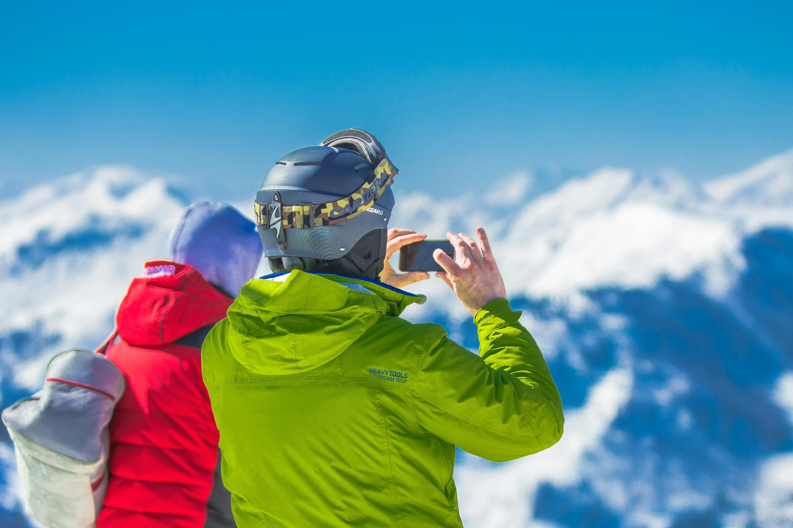
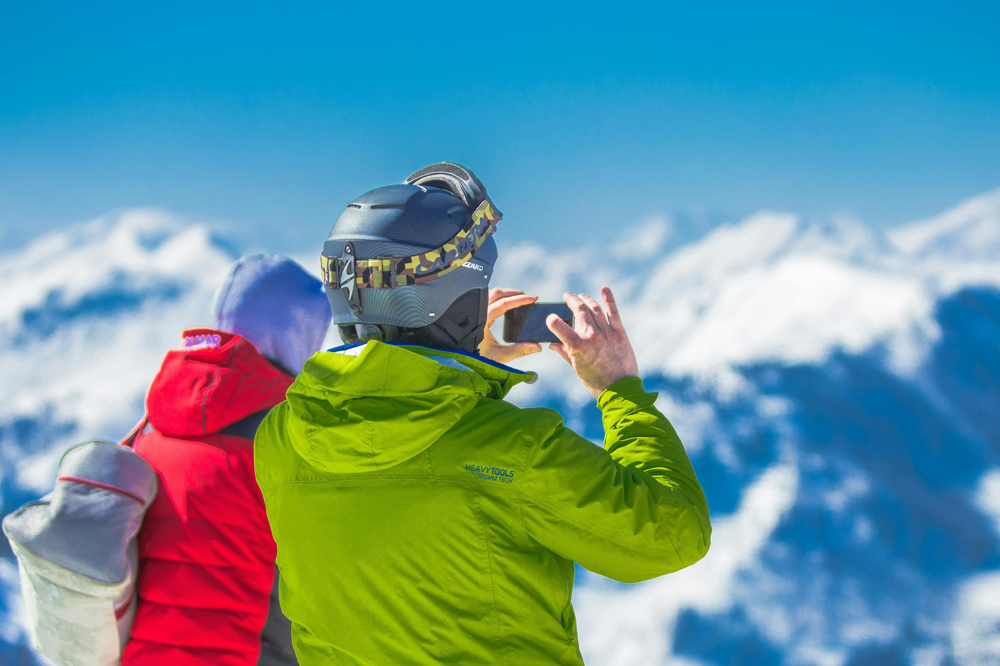

Foundation
“Kids of today are being told to be the leaders of tomorrow, but they’re not given the tools. We tell people to follow their dreams, but you can only dream of what you can imagine, and, depending on where you come from, your imagination can be quite limited.
”~ Trevor Noah – Born a Crime
Learn More
Get Involved
Trevor Noah Foundation has a storied history, both locally and around the globe. It’s the legacy of legendary comedian, philanthropist, TV show host, and true South African patriot, Trevor Noah. The Foundation is an ode to the greatest gift Trevor Noah has ever received, learning. Fueled by Trevor’s love for education, for giving kids an opportunity, and for the teachers that got him to where he is today; the Foundation honestly believes education is the seed from which everything grows.
We envision a world where education enables youth to dream, see and build the impossible. When African youth are empowered by quality education, they drive innovation and new solutions to social challenges in their communities and beyond. Their collective action yields a better, fairer world for all.
Our mission is to mobilise the global community to empower youth with the foundation for a Better Life: access to high-quality education.

Trevor Noah, South Africa’s most successful comedian, launched his foundation on 04 April 2018, in his home town. Trevor Noah Foundation is a youth development initiative that enhances youth preparedness for higher education or entry into the workforce. Noah’s vision for South Africa is that it advances because each generation builds and grows beyond its predecessor.
For Noah, educating our youth is key to transforming his vision for South Africa into a reality. “The higher the level of education.

President Cyril Ramaphosa welcomed Trevor Noah to the National Assembly on 7 March 2019. Ramaphosa introduced the international comedian as his special guest.
We do not choose our beginnings; however, we do choose our endings.
Our Khulani Schools have demonstrated incredible resilience and excellence in their matric results this year. Their achievements are particularly remarkable when compared to the South African national average.

From Safe Spaces to Sustainability Summit: TNF Staff Stories of Growth
As we close the chapter on another remarkable year, we find ourselves filled with gratitude for the milestones we’ve achieved, the challenges we’ve faced, and
Where Tech Meets Human Spirit: Reflections from Cape Town
There’s something magical about Cape Town’s morning light – the way it catches Table Mountain and dances across the Atlantic Ocean. Earlier this month, this
 

South Africa has one of the most unequal school systems in the world. Following decades of apartheid, millions of Black and Coloured South Africans live in forgotten townships and rural underserved communities distanced from economic hubs – resulting in a lack of employment opportunities and demoralized community leadership, as well as access to education and digital infrastructure.This reality does not have to be our future. Together, we can level the playing field to ensure all youth have equitable access to high-quality education across not only South Africa – but the entire African continent. When our youth thrive, we all thrive. We need you to join us by being a part of the solution. Donate and help us secure the future for young South Africans today.